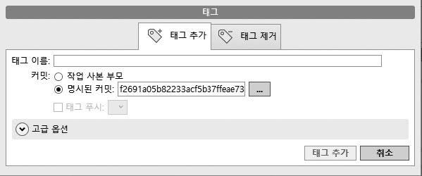

tag 명령어는 기본적으로 현재 HEAD가 가리키는 커밋을 기준으로 태그를 생성합니다. 현재 HEAD 포인터가 가리키는 커밋이 아닌 특정 커밋을 직접 지정하여 태그를 생성할 수 있습니다.
$ git tag -a 태그버전 커밋ID
특정 커밋을 지정하여 커밋을 생성할 때는 마지막 옵션으로 커밋 해시 값을 적습니다. 그러면 tag 명령어는 지정된 커밋 해시 값을 기준으로 새로운 태그를 생성합니다.
커밋을 지정해서 태그를 생성해 봅시다. 먼저 로그를 확인합니다.
infoh@DESKTOP MINGW64 /e/gitstudy10 (master)
$ git log --oneline
3ba46c0 (HEAD -> master, tag: 2.0.0) test 2.0.0
80f8890 test 1.1.2 ☜ 이곳을 지정해서 생성해 보겠습니다.
f2691a0 test 1.1.1
da8d211 (tag: 1.1.0) test 1.1.0
53028dc (tag: 1.0.0) test 1.0.0
3c92e35 first
로그 기록 중 80f8890 커밋을 기준으로 새로운 태그를 생성합니다. 태그 이름은 1.1.2로 합니다.
infoh@DESKTOP MINGW64 /e/gitstudy10 (master)
$ git tag 1.1.2 80f8890
그림 10-9] 특정 커밋을 지정한 태그

태그를 생성한 후에 다시 로그를 확인합니다. 이전에 작성한 커밋에 새로운 태그가 추가되었습니다.
infoh@DESKTOP MINGW64 /e/gitstudy10 (master)
$ git log --oneline
3ba46c0 (HEAD -> master, tag: 2.0.0) test 2.0.0
80f8890 (tag: 1.1.2) test 1.1.2
f2691a0 test 1.1.1
da8d211 (tag: 1.1.0) test 1.1.0
53028dc (tag: 1.0.0) test 1.0.0
3c92e35 first
이처럼 태그는 특정 커밋을 지정하여 생성할 수도 있습니다.
소스트리에서도 특정 커밋을 지정하여 태그를 생성할 수 있습니다. 가장 쉬운 방법은 그래프 목록에서 커밋을 선택하는 것입니다. 커밋을 클릭한 후 마우스 오른쪽 버튼을 눌러 명시적 커밋 메뉴를 선택합니다. 책에서는 test 2.0.0 커밋에서 마우스 오른쪽 버튼을 눌러 명시적 커밋 메뉴를 선택하고, 태그 이름에는 2.0.0을 입력합니다.
그림 10-10] 특정 커밋(test 2.0.0)의 태그 생성

마지막으로 태그 추가를 누르면 다음과 같이 2.0.0 태그가 생성됩니다.